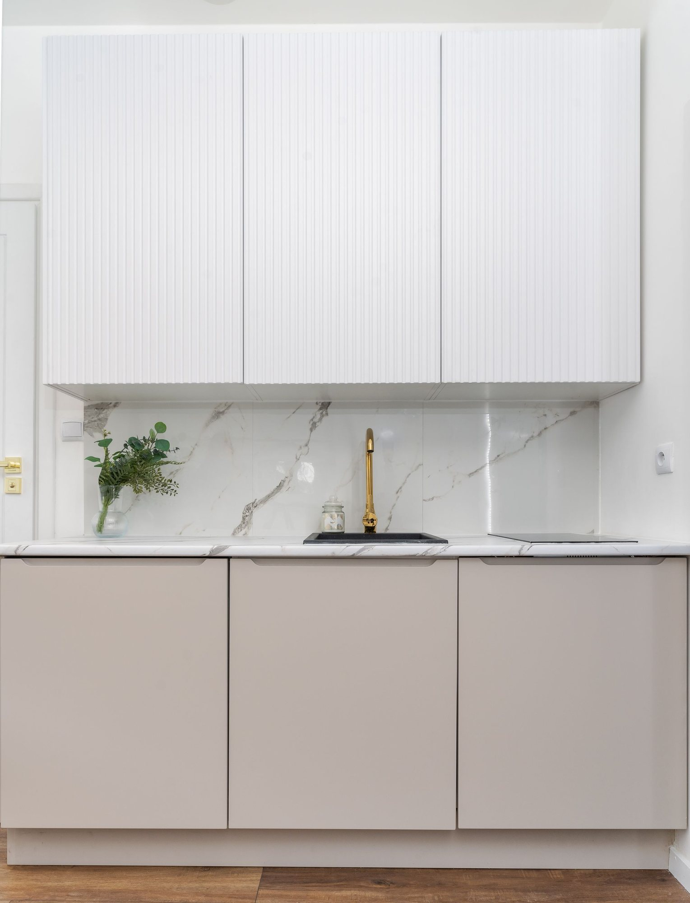
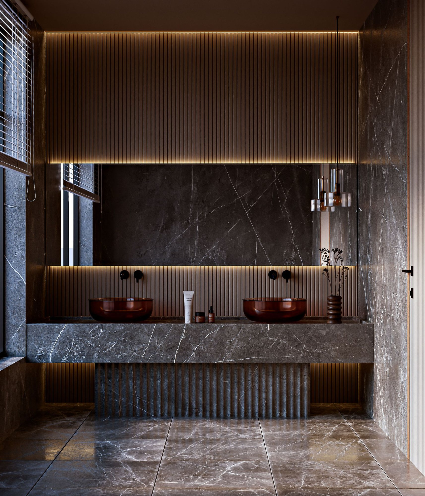
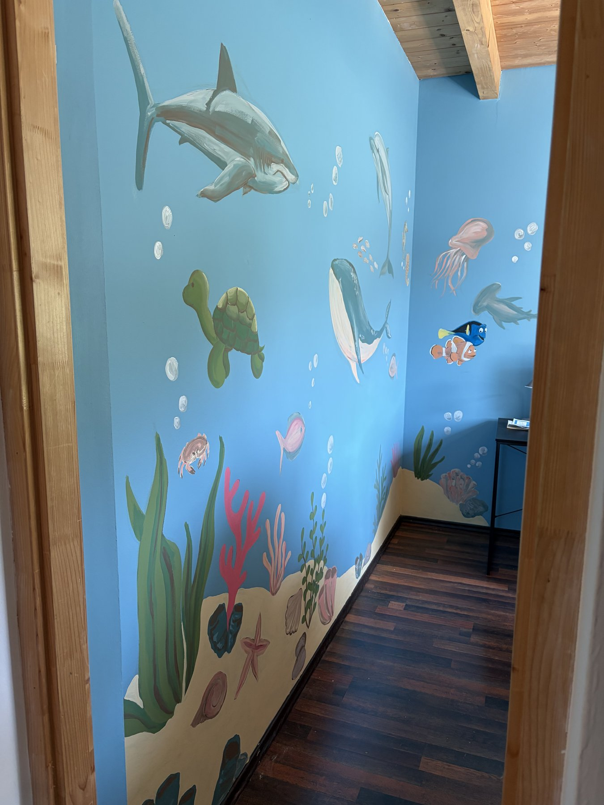
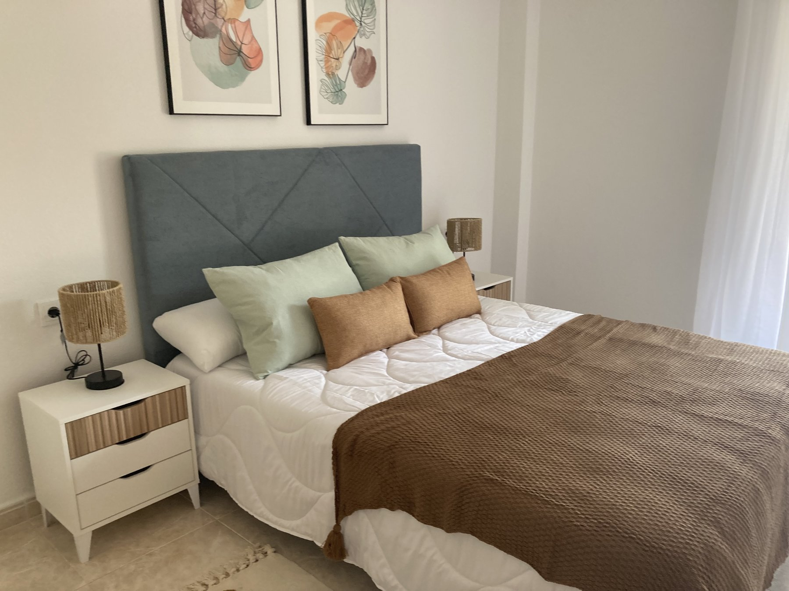

Konyhabútor
A konyha a lakás munkagépe: ergonómiára, tárolásra és a gépek helyére tervezek, a frontok és munkalapok anyagát a lakás egészéhez hangolom.

Fürdőszoba bútor
Párának ellenálló anyagok, jól szervezett tárolás és a vizesblokkhoz igazított méretek. A mosdótól a szennyestartóig mindennek megvan a helye.

Amit a fürdőnél elsőnek nézek
A gépészet helye, a tükör és a fény viszonya, és hogy hová kerül minden, ami most a pult tetején áll. A bútor ezekből következik, nem fordítva.
Gyerekszoba
Az ágy, a tároló és a tanulósarok évekig szolgál, a dekoráció cserélhető marad. Egyedi falfestéssel is dolgozom, hogy a szoba tényleg az övé legyen.

Beépített szekrény és gardrób
Lépcső alatti beugró, ferde tető, előszobai fal: a holt terek mind tárolóvá válhatnak. A belső osztást a ruhatárhoz és a szokásokhoz tervezem.

